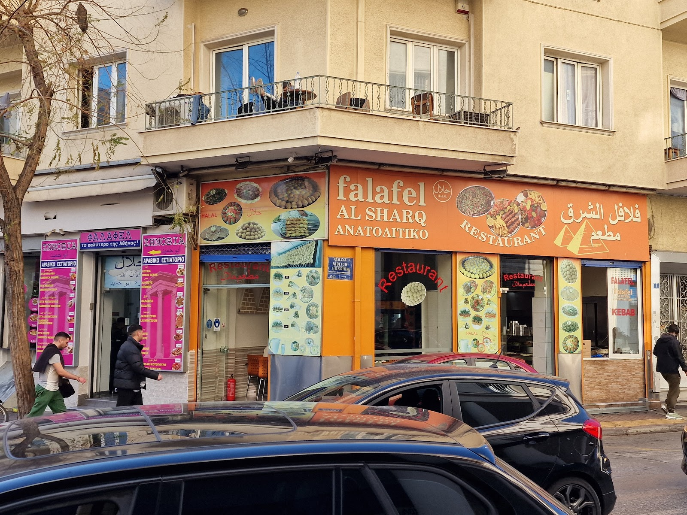
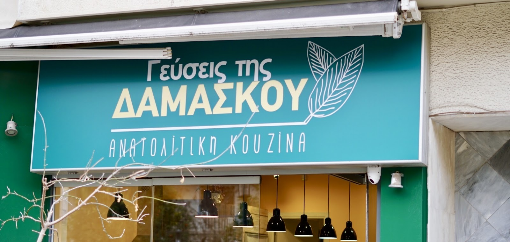
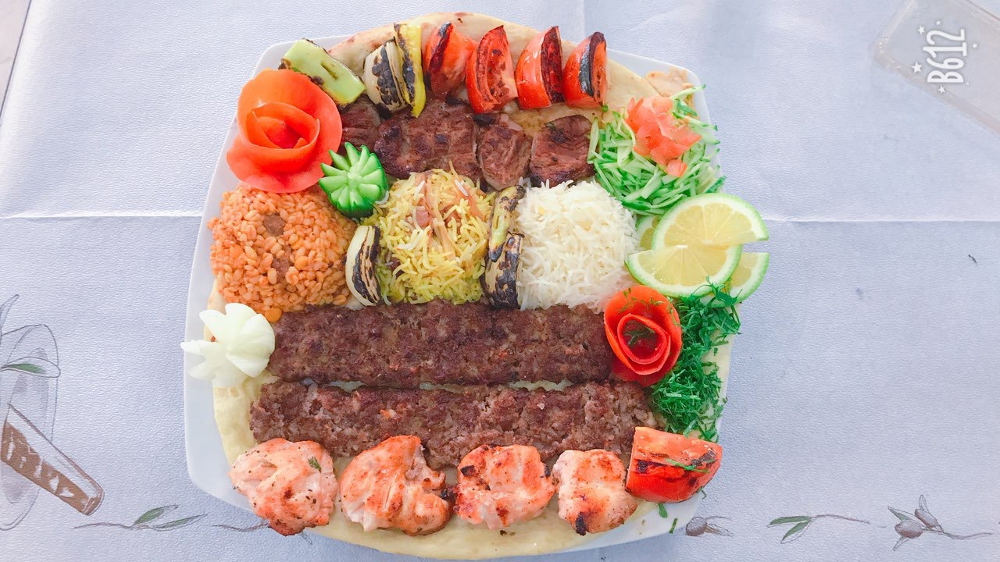
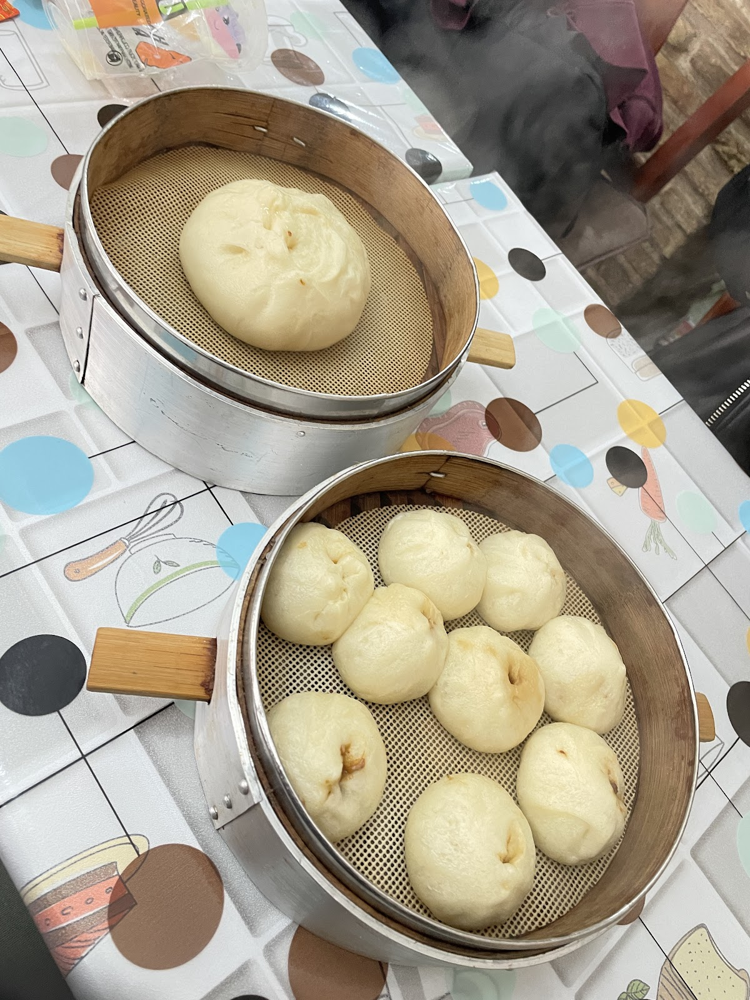
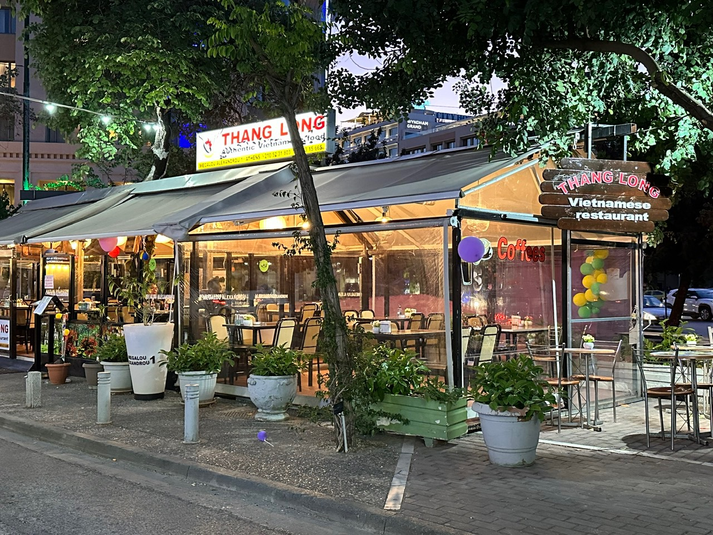
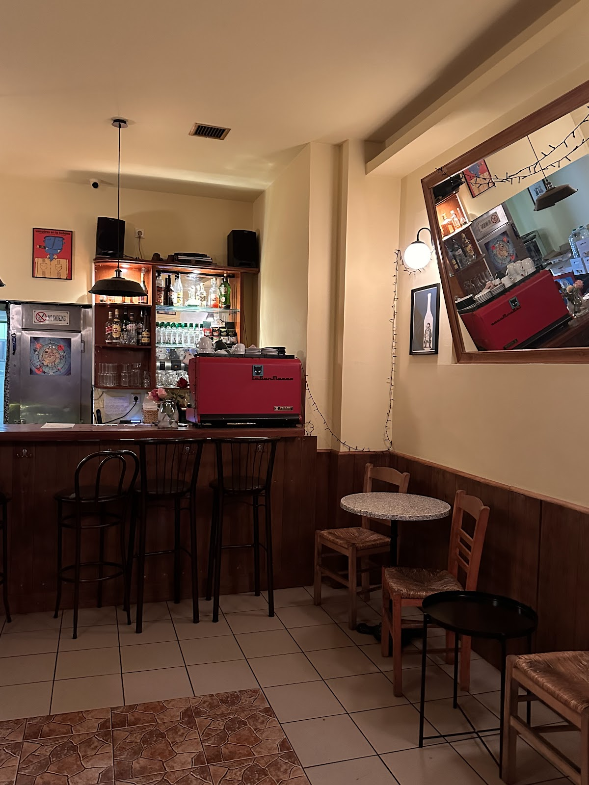
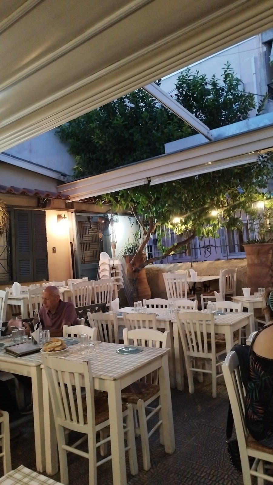
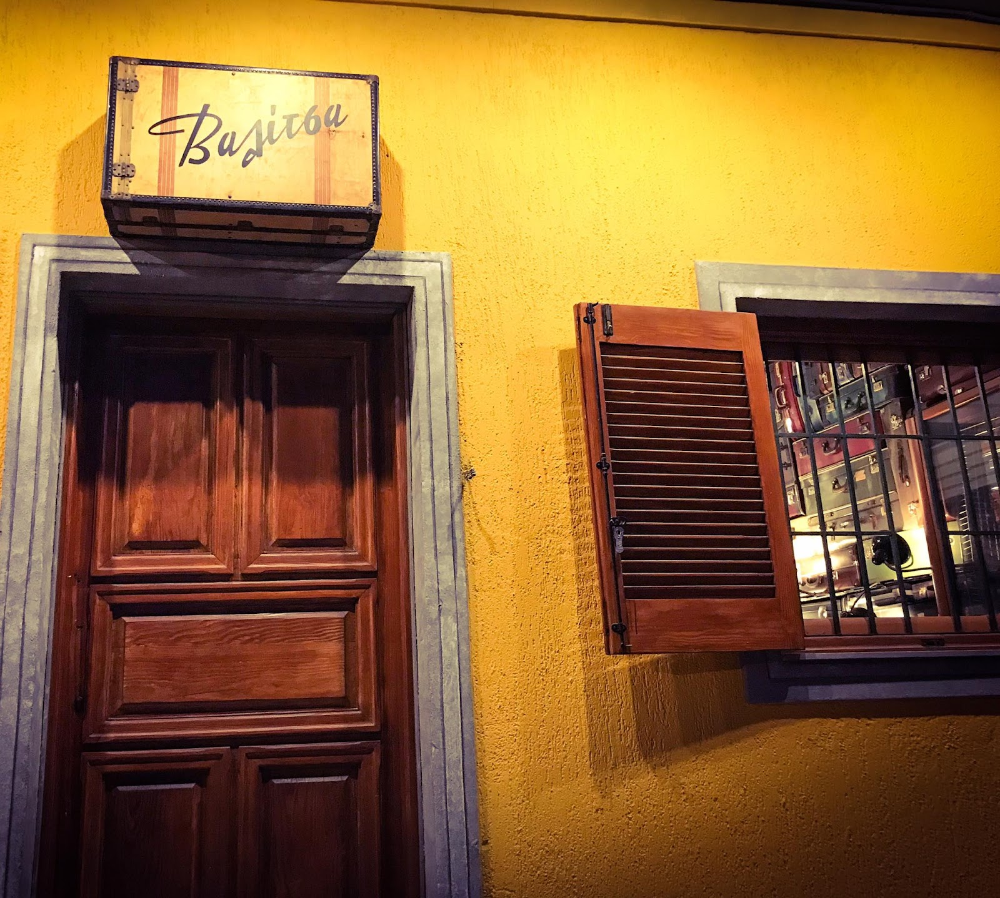
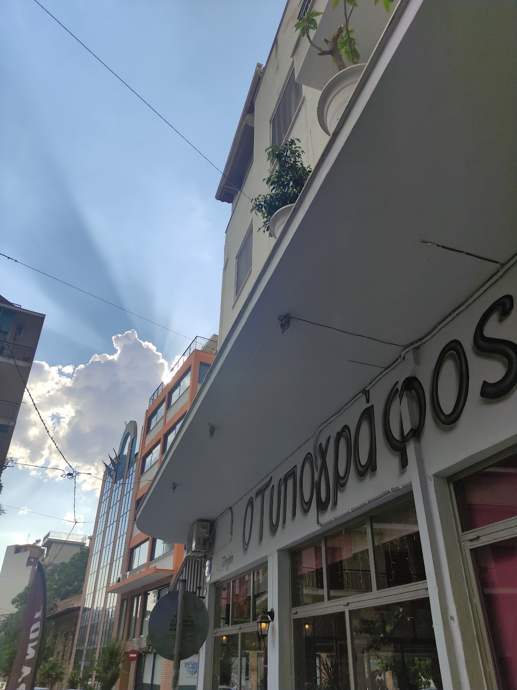
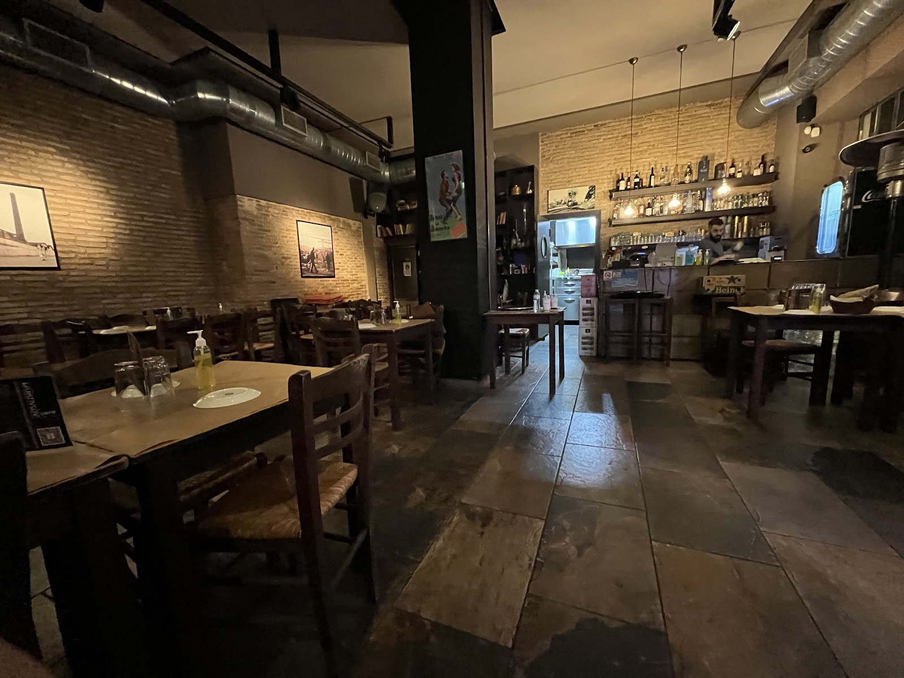

Πλατεία Βάθης
Falafel Al Sharq
★ 4,6 · Λιβανέζικο εστιατόριο

Πλατεία Βάθης
ΑΛΙ ΜΕΡΑΚΛΗ
★ 4,8 · Εστιατόριο φαλάφελ

Πλατεία Ανεξαρτησίας
Ζανούμπια
★ 4,3 · Συριακό εστιατόριο

Κυψέλη
Γεύσεις της Δαμασκού
★ 4,6 · Συριακό εστιατόριο

Μεταξουργείο
ΣΑΡΑ
★ 4,4 · Εστιατόριο Μέσης Ανατολής

Πλατεία Βικτωρίας
Green Kebab
★ 4,6 · Εστιατόριο με χαλάλ

Κυψέλη
MARILI
★ 4,8 · Γεωργιανός φούρνος

Πλατεία Βικτωρίας
LUSHNU
★ 4,5 · Γεωργιανό εστιατόριο

Κεραμεικός
168 Bar
★ 4,7 · Κινέζικο εστιατόριο

Μεταξουργείο
Thang Long
★ 4,9 · Βιετναμέζικο εστιατόριο

Πλατεία Αμερικής
KULINARISTAN
★ 4,8 · Εστιατόριο εθνικών γεύσεων

Κυψέλη
Kypselaki
★ 4,6 · Νεο-καφενείο & μεζεδοπωλείο

Κυψέλη
Το Μικιό
★ 4,8 · Μεζεδοπωλείο & καφενείο

Άνω Πετράλωνα
Κάππαρη
★ 4,4 · Νεοταβέρνα

Άνω Πετράλωνα · Πλ. Μερκούρη
Ραντεβού
★ 4,5 · Οινομαγειρείο & μεζεδοπωλείο

Άνω Πετράλωνα
ΑΝΤΕΤΙ
★ 4,5 · Μεζεδοπωλείο · ουζερί · τσιπουράδικο

Άνω Πετράλωνα
Βαλίτσα
★ 4,7 · Ταβέρνα με κρητικές γεύσεις

Μεταξουργείο
Ο Τυπογράφος
★ 4,8 · Καλλιγευστικό μεζεδοπωλείο

Κεραμεικός
Μυκηνών Γωνία
★ 4,7 · Μεζεδοπωλείο

Μεταξουργείο · Πλ. Καραϊσκάκη
Κόκκινος Κρίνος
★ 4,7 · Ψητοπωλείο & μαγειρευτά